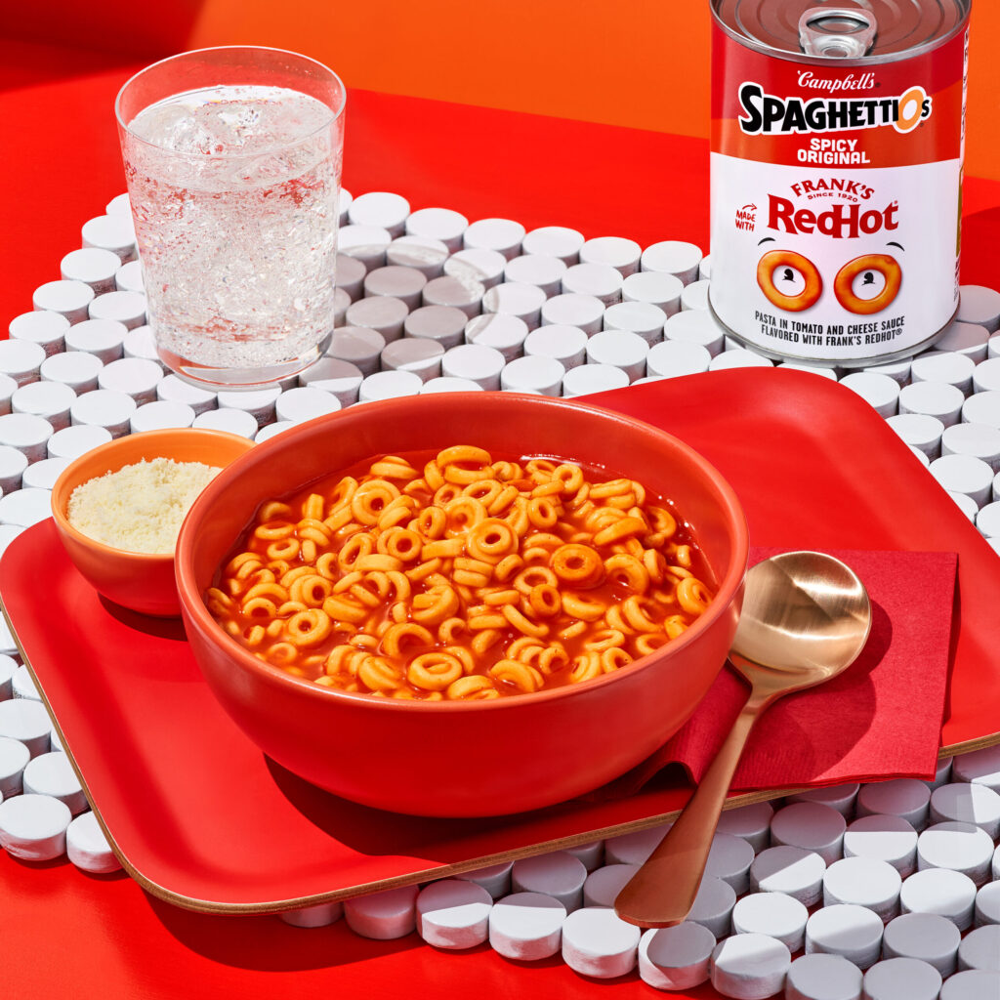

Italian-Inspired Pasta with Meatballs in Marinara Sauce

Description
This Italian classic will be sure to impress the pickiest connoisseurs! Easy to prepare, and even easier on the wallet! If you're looking for a taste of Italy without the trip to Fazoli's, look no further!
Ingredients
- 1 Can of Spaghettios with Meatballs
- Tabasco Sauce
Instructions
- Carefully open the can of Spaghettios
- Transfer the contents into a microwave-safe bowl
- Microwave bowl of Spaghettios for 1-2 minutes
- Top it off with Tabasco to add some zing to that bad Larry!
Back to Home